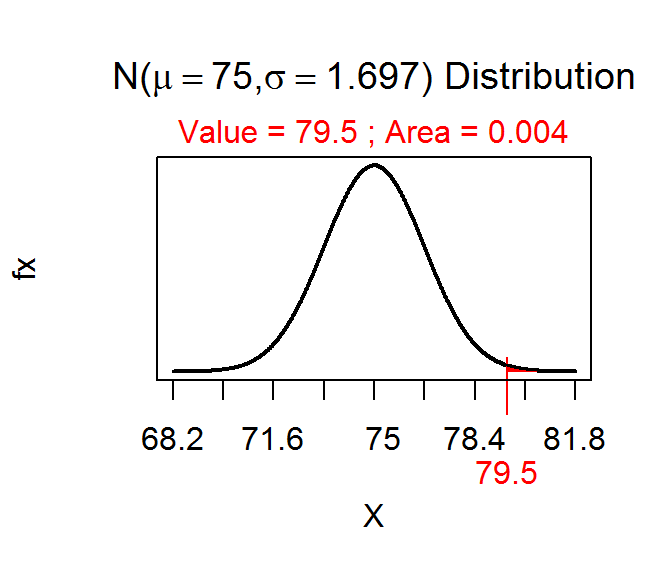
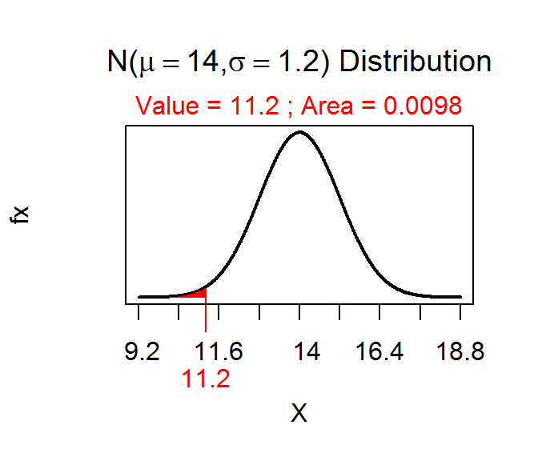
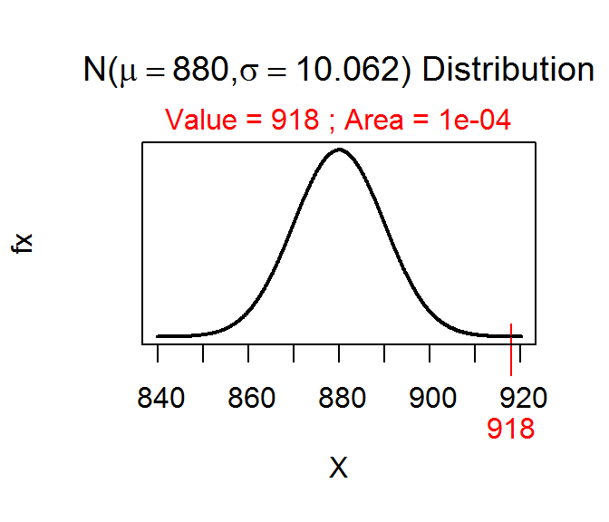
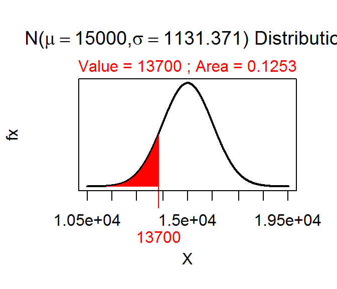
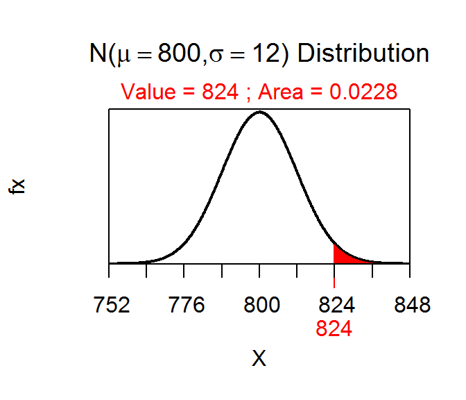
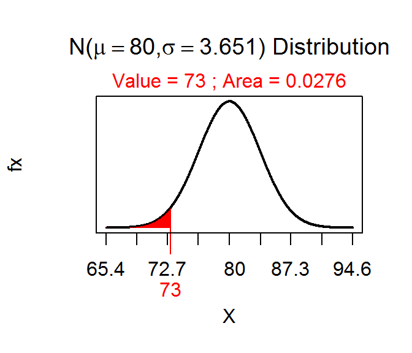
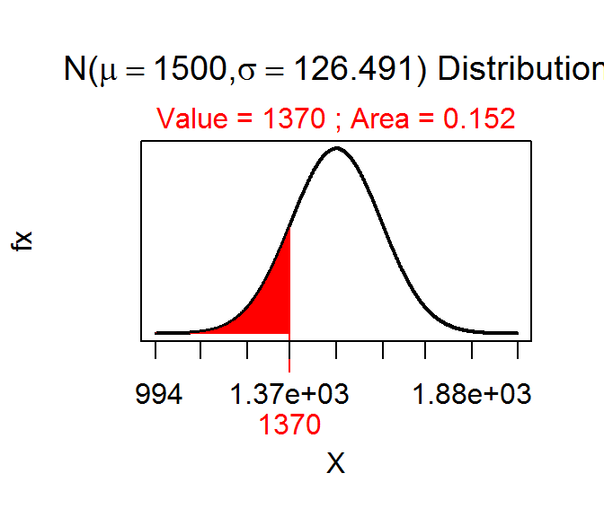

Class Excercise 1
-
\(H_{A}: \mu < 90\) vs. \(H_{0}: \mu = 90\)
-
\(H_{A}: \mu > 15\) vs. \(H_{0}: \mu = 15\)
-
\(H_{A}: \mu \neq 22500\) vs. \(H_{0}: \mu = 22500\)
-
\(H_{A}: p > 0.61\) vs. \(H_{0}: p = 0.61\)
Class Excercise 2
-
Reject \(H_{0}\) because p-value=0.0040<α.

-
Reject \(H_{0}\) because p-value=0.0196<α.

-
Reject \(H_{0}\) because p-value=0.0001<α.

-
Do not reject \(H_{0}\) because p-value=0.1253>α.

-
Do not reject \(H_{0}\) because p-value=0.0455>α.

-
Reject \(H_{0}\) because p-value=0.0276<α.

-
Do not reject \(H_{0}\) because p-value=0.3041>alpha;.

Class Excercise 3
Body Temperatures
-
\(H_{A}: \mu \neq 37\) vs. \(H_{0}: \mu = 37\)
-
x̄=36.808
-
p-value=0.000000093
-
Reject \(H_{0}\) because p-value < alpha;.
-
Average body temperature is somewhat less (but significantly) less than 37C.
Class Excercise 4
Class Excercise 5